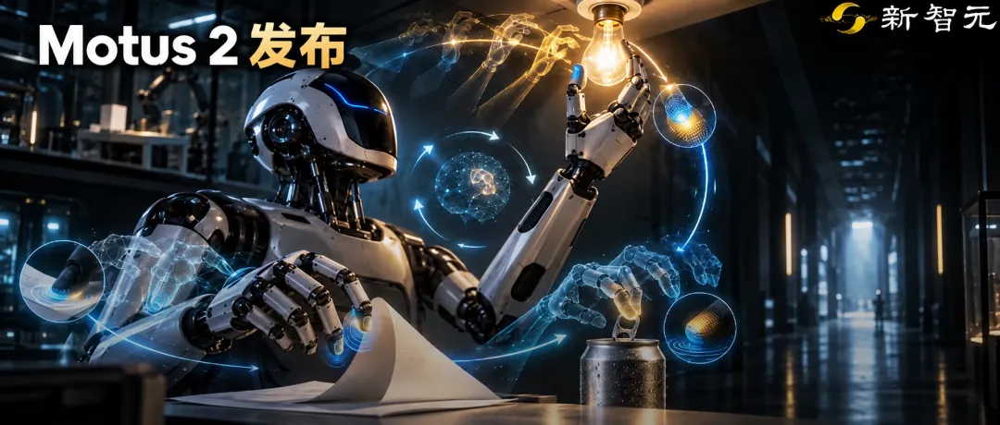
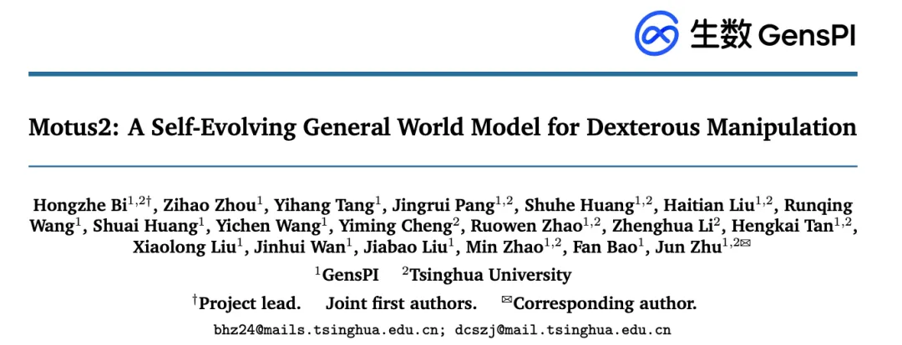

新智元报道
新智元报道

刚刚，机器人开始自进化，迈出自主世界智能体的一大步！
9月10日，在外滩大会现场，生数科技联合创始人、CEO 骆怡航带来了 生数 Motus2——一个面向灵巧操作的自我演化型通用世界模型。

它要解决的，不只是让机器人学会一个动作，而是让机器人能够预演动作后果、判断结果好坏，再用这些判断改进策略。
双手撕纸、翻书页、开易拉罐、擀面团等过去被视为高难度的精细动作，丝滑出现在了 Motus2 的真机演示中。
通用具身智能体，应当在一个统一系统里完成五件事：感知、预测、行动、评估与改进。形成这种持续演化的闭环，世界模型被视为最核心的范式。
然而，现有世界模型大多只是给世界模拟器「外挂」一个动作输出头，两者缺乏结构性的深度耦合，根本无法形成「决策—学习—策略改进」的闭环，导致机器人无法利用自身的交互经验实现自我进化。
针对这一瓶颈，生数科技不仅让世界模型接入了触觉模态，更首次统一了「策略、模拟、评估」，并结合触觉与历史信息，把预测后果、评价结果、改进动作连接起来，实现自进化闭环！
这是具身智能领域极具突破性的一步，其核心创新在于：
统一决策与学习接口。 用「动作优先」的因果信息流连接策略、模拟器和评估器，同时支持推理时规划与训练时策略优化。 扩展人类交互数据。 从单目 Ego 视频，到双目视频—动作数据，再到机器人领域适配，让规模化人类操作经验服务于灵巧操作。 补充历史与接触信息。 通过记忆机制和轻量级触觉专家，处理单帧视觉难以完整观察的状态。
在放置小球、多指操作、贴合橡皮、拧灯泡、放置手机五项主要真机任务中，Motus2 的平均成功率达到 84%。
在单独评测的放置手机、多指操作两项任务中，结合基于模型的强化学习与推理时规划，平均成功率从 65% 提升至 75%。
模型和数据Scaling，机器人开始在自己的脑海里推演未来、给自己的行为打分，并依靠这些反馈自我更新。
项目：https://motus-robotics.github.io/motus2/
论文：https://arxiv.org/abs/2608.30237

过去，机器人通用灵巧操作往往被视作简单的「从观测到动作」的端到端映射。
传统的行为克隆或模仿学习（Imitation Learning）靠死记硬背：看到A状态，就机械地输出B动作。
它没有物理常识，这种做法代价高昂，且模型既无法评判动作优劣，也无法在遇到没见过的微小扰动时从自身交互中改进。
这促使研究者转向「自进化」范式 ——让模型自己预测并评估候选动作的后果，再利用反馈闭环改进策略。
最近，世界模型开始具备两种能力：策略模型（提出动作）和仿真器（预测动作后效）。
生数科技此前推出的 Motus等上一代模型已经统一了这两种能力：让模型不仅能做，还能「预测」下一步画面。Motus2 的关键推进，是进一步把价值评估与策略改进接进这条链路。
Motus架构
但生数团队意识到：仅仅会「预言」还不够。
预测出的未来画面，并不能直接告诉你这个结果是否有助于完成任务。
只知道「会怎样」，却不知道「好不好」，机器人就永远做不出最优决策，也走不远。
因此，自进化迫切需要第三个接口——评估器（价值模型）。
策略回答「尝试什么动作」，仿真器回答「会发生什么」，评估器回答「这个结果好不好」。
这正是清华朱军团队通用世界模型（GWM）的核心原则：动作不应是附加的辅助输出，而必须是物理交互的因果接口，改变环境、带来新信息、并进入下一轮理解与预测。
Motus2 彻底颠覆了以往的架构，将三种截然不同的能力，融进了同一个「视频—动作」共享权重模型中：
策略（世界‑动作模型，WAM）：看指令、机器人状态和视觉历史，生成动作（打工人）。 仿真器（动作条件世界模型，AC-WM）：给定当前状态和动作，预测未来画面（预言家）。 评估器（价值模型，VM）：看动作及结果，判断任务进展（监考官）。
三者是同一套参数的三个功能接口，而非独立训练的架构。
要让同一个模型既能预测未来，又能真实控制机器人，一个关键问题是：动作不能提前「看到」执行之后才会出现的信息。
为了让这三者顺畅运作，Motus 2设计了「动作优先」（Action-first）因果流与掩码机制 ：块内自回归确保机器人绝不能「剧透未来」。
在中/后训练中，动作优先掩码阻止当前未来视频信息进入动作预测，而未来视频token可以读取动作，价值查询则可以读取两者。
因果链条被严丝合缝地固化为：
生成动作 → 基于动作推演未来 → 评估未来价值。
三个角色共用一套参数，靠不同的输入方式切换。
如果将当前上下文记为 c、动作记为 A、未来视觉状态记为 Z、任务进展值记为 Y，可以表示为：
具体来说，动作只能读取执行前已有的信息；未来视频可以读取动作；价值评估则可以同时读取动作和预测结果。
这样既保留了联合训练的优势，也让部署更灵活：普通控制只需生成动作，需要规划或策略优化时，再调用预测和评估能力。
预测未来之后，下一步是把预测结果真正变成决策和学习信号。Motus2 分别从推理阶段和训练阶段入手。
这是 Motus2 最具革命性的进化点：它第一次让行动、预测与评估形成了自进化的正向飞轮。
传统的强化学习需要在物理世界里经历千万次试错，但真实机器人哪经得起如此折腾？
摔坏几次胳膊、烧毁几块电机，研发预算可能就见底了。
Motus 2是怎么解决的？
答案是：基于模型的强化学习（MBRL）与测试时规划（Inference-time Planning）。
它把试错搬进了世界模型的「脑中」，在两个阶段实现了降维打击：
面临拧灯泡或者抓取手机的瞬间，Motus 2不会盲目出拳。它先生成 N 个候选动作，并在脑内的「模拟器」中把这 N 种可能性全部推演一遍。
价值评估器会迅速对这 N 种未来打分。哪一种未来不会滑脱？哪一种能最快完成目标？
选最高分的那一个，付诸现实执行。
这一机制，让机器人具有了类似 AlphaGo 下棋时的推演规划能力。
先生成候选动作，再预测并评分；每执行一段动作，都重新回到真实世界进行规划
在后台训练中，世界模型推演出的未来和评分，会反向作为强化学习的奖励信号，直接用于微调动作策略。
高分动作被正向强化，低分动作被抑制。
这带来了一个观念级的颠覆：机器人的失败数据，终于不再是工业废料了！
过去训练机器人，只有成功的轨迹是有用的，失败轨迹只能丢弃。
但对于 Motus2 来说，失败轨迹是无价的宝藏——它能清清楚楚地教会模型：「为什么做了这个动作，世界会变成这个糟糕的局面？」
候选生成、后果预测与价值评估共同提供策略学习信号。规划改变本次选择，MBRL 改变后续候选动作的生成分布。
数据表明，在手机放置与多指操作两项高难度真机任务中：
仅用基础策略，平均成功率只有 65%，但引入 MBRL 进行策略优化后，成功率跳升至 72.5%；如果再叠加上推理时的规划，成功率直接被干到了75%！整整提升了 10 个百分点。
这意味着，机器人在没有人类外部干涉的情况下，依靠自己的推演和评价，实现了策略的持续进化。
全世界都在做具身智能，但所有团队头顶都悬着同一把达摩克利斯之剑：数据匮乏。
大语言模型之所以能掀起海啸，是因为互联网上有取之不尽的几十万亿文本 token。但真实高精度的机器人遥操作数据极其稀少且昂贵。
生数科技走出了一条颠覆性的破局路线：如果机器人数据不够，为什么不直接拿人类的经验来凑？
人类在这个物理世界里生活了几百万年，做饭、翻书、收拾房间，人类的第一人称视角里本身就蕴藏着整个物理宇宙最完备的「操作常识」。
Motus2 构筑了一套极其庞大的人类数据金字塔体系。
整个训练分为三个阶段：
第一阶段：单目 Ego 视频预训练。 从大量真实人类操作视频中学习物体、场景和行为变化，建立基础世界知识。
第二阶段：双目视频—动作联合预训练。 进一步加入双目观测和人类动作，利用空间信息和三维手部姿态，学习更细粒度的手—物交互规律。
第三阶段：机器人领域适配。 利用机器人轨迹和人机对齐数据，将人类世界中学到的经验迁移到机器人的观测和控制空间。
从单目观察、双目交互，到人机对齐与真实机器人数据，不同层次承担不同的学习任务。
这套体系的效果极其惊艳。
生数科技的研究发现：在双目人类数据从 2,000 小时提升到 20,000 小时的过程中，模型对人类动作预测的误差呈现出平滑的持续下降。
人类具身数据的 Scaling Law（尺度定律）依然有效！
更震撼的对照实验出现在最终的任务迁移上，如果单纯用人类数据预训练，机器人下地干活的平均成功率只有 51%；但只要经过这套金字塔体系，加上那 100 多个小时的关键领域对齐，成功率直接从 51% 飙升到了 84%——整整暴涨了 33 个百分点！
人类数据提供了浩瀚的物理世界常识，机器人数据完成了临门一脚的身体适应。
生数科技用这套组合拳，为全行业撕开了一条低成本跨越数据鸿沟的可行通道。
如果你仔细研究物理世界中的灵巧手操作，你会发现单靠一双「大眼睛」（视觉）是注定要翻车的。
因为真实世界有两个巨大的陷阱：单帧画面没有过去，纯粹视觉看不见阻力。
为了让机器人彻底告别「笨手笨脚」，Motus2 打补丁补齐了两个最具辨识度的核心能力：长时记忆机制与全模态触觉专家。
Motus2 默认采用有界滑动窗口作为上下文，并评估了两种扩展方案：全历史全局自回归，以及 MemoryWAM 风格的混合记忆（由近期帧、初始锚点帧和压缩记忆 token 组成）。
三者在长上下文仿真和真机探针任务上进行了性能对比；MBRL 实验则采用滑动窗口设置。
Motus2 深度融合了长时信息机制，完整保留早期观测。
在实验中，拥有长期上下文记忆的模型成功率达到了 57.5%，远超那些把历史信息随意压缩抹平的模型。
它让机器人不仅活在当下，更能在时间的连续流淌中做决策。
为什么以前很多机械手一碰纸巾就撕得稀碎，拿个纸杯就捏瘪？因为纯靠摄像头，未必能充分观察接触处的受力与滑动，也存在不可调和的延迟与视线遮挡。
Motus2 创造性地引入了一个轻量级触觉专家模块。
由于触觉模块复用主模型已有的中间计算结果，不需要每次重新运行完整视频骨干，因此能够兼顾反馈频率和计算效率。
在抽取纸杯与撕纸这两项对接触力敏感的实验中：
没有触觉反馈时，成功率只有 60%；引入触觉专家模块后，成功率立刻冲到了 72.5%，净增 12.5 个百分点！
一双手，既有长达数分钟的推演记忆，又有指尖毫秒级的微末触感，这才是通往灵巧操作的正道。
Motus2 验证了一条具体路径：提出动作 → 预测后果 → 评估结果 → 改进策略。
但放在生数的研究版图中，它的意义还不止于一双手变得更灵巧。
世界模型的前沿竞争，正在跨越原有的产品边界。Google DeepMind 以 Genie 探索可交互环境生成；李飞飞团队的 World Labs 则用「渲染器、模拟器、规划器」梳理不同功能，并讨论这些能力如何走向统一。各家的切入点不同，却都在追问：对世界的建模，怎样支持更广泛的智能？
朱军团队给出的回答，是从「理解、预测、行动」的闭环出发，提出通用世界模型的五级发展路线：生成世界、与世界交互、在世界中行动、自主世界智能体、世界组织者。这是一份研究路线图，判断模型进阶的依据，是它与环境互动、利用反馈及自主完成任务的能力。
沿着这条路线看，生数的视频与具身布局就有了共同线索。2024年推出的 Vidu，从视频中学习对象、运动与时序关系；2026年7月发布的 Vidu S1，让用户能够实时介入生成过程，使世界随输入持续变化。前者积累世界动态的生成能力，后者进一步探索交互。
Motus 与 Motubrain 把问题推进到物理世界：预测不再只服务于画面生成，还要与机器人可执行的动作联系起来。Motus2 又向前推进一步，让生成的未来参与动作比较，让对结果的评价反过来改善策略。
如果说前代 Motus 是代表中国团队成功攻克了 L3「在世界中行动」，让世界模型成功长出了双手，克服了在世界中行动难题；
那么今天的 Motus2，则是从 L3 迈向 L4「自主世界智能体」的一次极其关键的抢滩登入！
这次为世界模型构筑了完整的生命周期闭环：
行动 → 预测 → 评估 → 反馈 → 再学习。
正如生数科技团队所言，尽管触觉跨本体迁移、长时程预测的绝对稳定性依然是摆在全行业面前的硬骨头，但 Motus2 至少证明了一点：
世界模型完全有能力在不依靠人类填鸭式教学的前提下，在物理世界中依靠自己的预测与反思，越变越聪明。
从屏幕里的光影像素，到能够拿起螺丝刀、拧上灯泡、感知受力形变的钢铁之躯；从被动执行预设脚本，到开始主动权衡每一种未来的代价……
具身智能的世界模型底座，正在以超乎想象的速度演进。当机器开始学着像人类一样「三思而后行」，物理世界的 AGI 时代，真的不再遥远了。
参考资料：
编辑：大卫